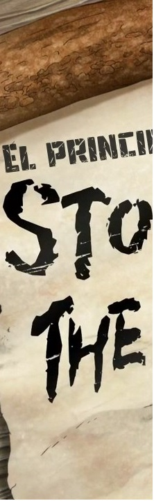
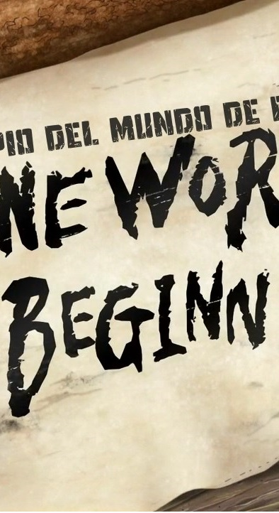

Dr. Stone es una serie de anime muy popular y además muy científica.
Senku y sus amigos pretenden recuperar la sociedad moderna desde cero y
para ello necesitan de todo el conocimiento científico que tienen.
Ahora...
¿lo que aparece en la serie es real?
¿Tiene sentido científico?
simplemente haz click
en el video.

mi frase favorita es :
Chrome le temes a la noche?
-Sí, es oscura.
-No hay oscuridad en mi época, con la ciencia la humanidad venció a la noche
- Venus Bąrcė
-Sí, es oscura.
-No hay oscuridad en mi época, con la ciencia la humanidad venció a la noche

En este anime dejan claro que las explicaciones cientificas son ciertas y que se deben hacer sin supervisión de adultos, otra cosa es que se muestre que sea sencillo, al menos el anime dejan algo claro que las cosas no son fáciles.
- DragonSaku

Quiero agradecer a Senku por todo el conocimiento que he agarrado estas ultimas 24 semanas, mi papa y madre por dejarme ver anime y a mi chiguagua fufu por ser el conejillo de indias de mis experimentos gracias a ello ahora tengo un dinoaurio unicornio dragon como mascota - Osman Acuña
Y DICEN LOS EXPERTOS...
-Sergio Parra
- Experto en animación y videojuegos
Dr. Stone es toda una rareza. El azote de posmodernismo, la superstición y el síndrome de Frankenstein.
Y, encima, aunque sea pedagógica porque en cada capítulo aprendes algo de química o cualquier otra
disciplina, no tropieza en el didactismo cansón o redundante de otras "propuestas educativas".
Esto está hecho para pasárselo bien, y si aprendes, mejor.
Sin contar las continuas críticas a la superstición y la idea roussoniana del buen salvaje . O como diría su protagonista, Senku,
cómo la revolución científica nos permite ir 10.000 millones de veces más allá:
A la humanidad le llevó dos millones de años pasar de la edad de piedra a la civilización moderna.
Tenemos que hacer lo mismo en un tiempo récord. ¡Recuperaremos el mundo!
Descifraremos la ciencia detrás de la petrificación y el principio para la regeneración.